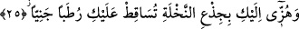

yerden seslendi. el-Kısas’ta hurma ağacının altından seslendiği söylenmiştir. el-
Es’iletü’l-mukhime’de der ki: Âyetteki “min” harfi “men” diye de okunmuştur. Buna
göre manâ şöyle olur: “Onun altındaki kimse yani İsa annesinin karnından çıkınca ona
şöyle seslendi:”
“Üzülme” yani İsa’nın doğumuna ve kurak bir yerde olduğuna üzülme “Rabb’in alt
tarafında” yani senden daha aşağıda bir yerde “bir su arkı var etti.”[14] Peygamber
Efendimiz’in açıkladığına göre küçük bir nehir var etti.
İbn Abbas (r.anhümâ) şöyle demiştir: Cebrâil (a.s.) ayağını yere vurdu, tatlı bir su
pınarı ortaya çıktı ve dere şeklinde aktı.
Hakîkat erbâbından birisi şöyle der: Hz. İsa peygamberliğini beşikte iken “Bana
kitap verdi ve beni peygamber yaptı...” (Meryem, 19/30) âyetiyle, annesinin karnında
iken de (seriyyen kelimesinin diğer bir anlamına göre:) “Üzülme, Rabb’in alt tarafında
peygamberlikle insanların efendisi olacak birisini var etti.” âyetiyle haber vermiştir.
25. “Hurma dalını kendine doğru silkele, üzerine olgunlaşmış taze hurma
dökülsün.”
“Hurma dalını kendine doğru silkele, üzerine olgunlaşmış taze hurma dökülsün.”
Bir şeyi silkelemek, onu karşılıklı yönlere doğru şiddetli bir şekilde hareket ettirmektir.
Burada kasdedilen ise kendisine doğru çekmek ve itmektir. Çünkü “kendine”
ifâdesinden, sana doğru salla anlamı anlaşılmaktadır. Âyette Meryem’e hurma ağacını
kendine doğru sallaması emredilmekte, salladıkça da üzerine devamlı surette olgun
hurma döküleceği haber verilmektedir.
el-Es’iletü’l-mukhime’de şöyle der: “Allah burada Meryem’e hurmayı sallamasını
niçin emretti, halbuki daha önce mihrabda iken Zekeriyya (a.s.) onun rızkını/yiyeceğini
yanında hazır olarak buluyordu? Bu sorunun cevabı şöyledir: Meryem çocukken hiçbir
alâkası yoktu. Alâka (çocuk) gelince bu zorluk ve meşakkati zorunlu kıldı.
Es’iletü’l-hikem’de ise denilir ki: “Meryem’e ağacı silkeleme emrinin verilmesinin
hikmeti nedir?” Denilmiştir ki: Meryem, babasız bir çocuğun doğmasına şaşırmıştı. O
bu hususta şaşırmasın diye kuru hurma ağacından yaş hurma vermek suretiyle Allah ona
bir başka mûcize göstermiştir. Mûcizenin ağaçta yaratılmasının sırrı ise hurma ağacının
Âdem (a.s.)’ın çamurundan yaratılmış olması dolayısıyladır. Böylece bu ağaçla -
başkasının değil- insanlığın hakîkatine manevî bir nisbet vardır. Çünkü hurma da eşi
olmadan meydana gelmez.
“Neden Allah, nehri Meryem’in gayreti olmadan akıttı da hurmayı onun gayretiyle
verdi?” sorusuna cevâben şöyle denilmiştir: Çünkü hurma gıdâ ve arzudur. Su ise
temizlik ve hizmet aracıdır. Yine hurmanın meyvesi çalışmaya dayanan (kesbî) amelin